── Attaching core tidyverse packages ──────────────────────── tidyverse 2.0.0 ──
✔ dplyr 1.1.4 ✔ readr 2.1.5
✔ forcats 1.0.0 ✔ stringr 1.5.1
✔ ggplot2 3.5.1 ✔ tibble 3.2.1
✔ lubridate 1.9.3 ✔ tidyr 1.3.1
✔ purrr 1.0.2
── Conflicts ────────────────────────────────────────── tidyverse_conflicts() ──
✖ dplyr::filter() masks stats::filter()
✖ dplyr::lag() masks stats::lag()
ℹ Use the conflicted package (<http://conflicted.r-lib.org/>) to force all conflicts to become errors
Task 1: Read in the Data and Modify
Reading in with Base R
Read in csv data, using a modification of the R code in the zipped file download.
d1 <-read.table("student-mat.csv",sep=";",header=TRUE)d2 <-read.table("student-por.csv",sep=";",header=TRUE)d3 <-merge(d1, d2,by=c("school","sex","age","address","famsize","Pstatus","Medu","Fedu","Mjob","Fjob","reason","nursery","internet"))print(nrow(d3)) # 382 students
[1] 382
Reading in with Tidyverse
Read in and combine datasets using tidyverse (semicolon delimiter).
student_mat <-read_csv2("student-mat.csv")
ℹ Using "','" as decimal and "'.'" as grouping mark. Use `read_delim()` for more control.
Rows: 395 Columns: 33
── Column specification ────────────────────────────────────────────────────────
Delimiter: ";"
chr (17): school, sex, address, famsize, Pstatus, Mjob, Fjob, reason, guardi...
dbl (16): age, Medu, Fedu, traveltime, studytime, failures, famrel, freetime...
ℹ Use `spec()` to retrieve the full column specification for this data.
ℹ Specify the column types or set `show_col_types = FALSE` to quiet this message.
student_por <-read_csv2("student-por.csv")
ℹ Using "','" as decimal and "'.'" as grouping mark. Use `read_delim()` for more control.
Rows: 649 Columns: 33── Column specification ────────────────────────────────────────────────────────
Delimiter: ";"
chr (17): school, sex, address, famsize, Pstatus, Mjob, Fjob, reason, guardi...
dbl (16): age, Medu, Fedu, traveltime, studytime, failures, famrel, freetime...
ℹ Use `spec()` to retrieve the full column specification for this data.
ℹ Specify the column types or set `show_col_types = FALSE` to quiet this message.
student_all <- student_mat |>inner_join(student_por, by =c("school","sex","age","address","famsize","Pstatus","Medu","Fedu","Mjob","Fjob","reason","nursery","internet"))
Warning in inner_join(student_mat, student_por, by = c("school", "sex", : Detected an unexpected many-to-many relationship between `x` and `y`.
ℹ Row 79 of `x` matches multiple rows in `y`.
ℹ Row 79 of `y` matches multiple rows in `x`.
ℹ If a many-to-many relationship is expected, set `relationship =
"many-to-many"` to silence this warning.
There are at least a couple of issues with the resulting data set.
The warning above shows that the criteria on which the data sets were joined do not have a unique set of values for each observation, so this duplicates observations (i.e. a many-to-many match).
Additionally, after inner joining there are only 382 observations, whereas both the math and portuguese datasets had more than this–395 and 649, respectively. Therefore, the final dataset has dropped observations from both datasets since they didn’t have a match in the other one.
Because this only joined on a handful of columns, and the initial data sets both have the same variables, there are a lot of columns with potentially duplicated information.
Tidyverse - join on additional columns
Still use tidyverse, but join on all variables in each data set, except for G1, G2, G3, paid, and absences.
# create a set of columns to join onjoin_columns <-names(student_mat) |>setdiff(c("G1", "G2", "G3", "paid", "absences"))# join the data setsstudent_combined <- student_mat |>inner_join(student_por, by = join_columns, suffix =c("_mat", "_por"))print(nrow(student_combined))
[1] 320
No warnings this time, but there are only 320 rows, so I know it doesn’t have all observations from either data set since some didn’t match observations in the other data set.
Categorical variables: convert to factor
Convert 4 categorical variables to factors using mutate
# math data setstudent_mat <- student_mat |>mutate(studytimeF =factor(studytime,levels =c(1, 2, 3, 4),labels =c("<2 hours", "2 to 5 hours", "5 to 10 hours",">10 hours")),schoolsupF =as.factor(schoolsup),famsupF =as.factor(famsup),addressF =factor(address, levels =c("U", "R"), labels =c("Urban", "Rural")) )# portuguese data setstudent_por <- student_por |>mutate(studytimeF =factor(studytime,levels =c(1, 2, 3, 4),labels =c("<2 hours", "2 to 5 hours", "5 to 10 hours",">10 hours")),schoolsupF =as.factor(schoolsup),famsupF =as.factor(famsup),addressF =factor(address, levels =c("U", "R"), labels =c("Urban", "Rural")) )# combined data setstudent_combined <- student_combined |>mutate(studytimeF =factor(studytime,levels =c(1, 2, 3, 4),labels =c("<2 hours", "2 to 5 hours", "5 to 10 hours",">10 hours")),schoolsupF =as.factor(schoolsup),famsupF =as.factor(famsup),addressF =factor(address, levels =c("U", "R"), labels =c("Urban", "Rural")) )
Task 2: Summarize the Data (Very Basic EDA)
How Data is Stored
Data validation: checking basic summary statistics
I compared the above values with the documentation provided on the data download website.
Main focus was ensuring the min and max values aligned with what the documentation says they should be, and for the most part they look as expected.
For numeric columns, I checked that the min and max were the same as the range stated for the column in the documentation
For categorical variables (marked with asterisks in the above table), the min and max “values” really just reflect how many unique values there are in the column, so I just made sure the max was the same as the number of possible values for that column
Documentation states that the range for the failures column is 1-4. However, in the combined data the min is 0 and the max is 3. I checked the counts for each value in the combined and the original data sets (see below), since I wondered if there were some in math or portuguese data sets that were lost after the inner join. However, there were no 4+ failures in any of them.
There are a lot of variables in this data set that use numbers to code for values that are non-numeric. So even though R read them in as numeric, it is not meaningful to do mathematical operations on them, so they will be changed to character.
Integer representations of education level (Medu, Fedu)
Time ranges (traveltime, studytime)
n < 4 is an actual count, but n = 4 is a catchall value for n >= 4 (failures). Mathematical operations can be done if filtered on n < 4, but it might be best to change it to character since just excluding a high number of failures might not have a lot of analytic value.
ranked measures on a scale of 1 to 5 (famrel, freetime, goout, Dalc, Walc, health)
There are 10 variables that are just yes/no fields, so they are binary. Technically they can be stored as boolean, but they’ll be left as yes/no just because those values look nicer in tables and there’s not a chance of accidentally coercing them to numeric like there is with boolean.
<2 hours 2 to 5 hours 5 to 10 hours >10 hours
no 39 43 17 6
yes 32 90 34 16
Out of the subset of kids without school support, the largest relative frequency category for kids with and without family support is 2 to 5 hours of studying.
Conditional two-way table in base R
Create a three-way table with table(), then subset it
`summarise()` has grouped output by 'famsupF'. You can override using the
`.groups` argument.
# A tibble: 2 × 5
# Groups: famsupF [2]
famsupF `<2 hours` `2 to 5 hours` `5 to 10 hours` `>10 hours`
<fct> <int> <int> <int> <int>
1 no 40 52 18 7
2 yes 41 105 38 19
Interesting that nearly the same number of students in both groups spend <2 hours studying, even though the group with family support is a lot larger.
Bar graphs
Stacked bar graph
g <-ggplot(data = student_combined, aes(x = famsupF, fill = studytimeF))g +geom_bar() +ggtitle("Study time with and without Family Support") +theme(plot.title =element_text(hjust =0.5)) +labs(x ="Family Support", y ="Number of Students") +scale_fill_discrete("Study Time")
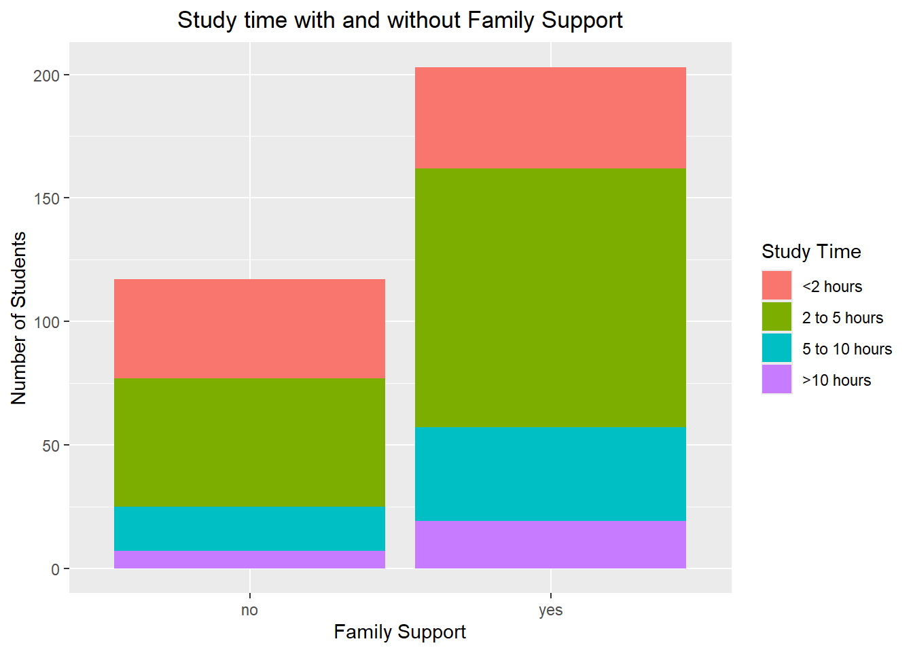
Students are more likely than not to have family support. Most kids in both groups put in between 0 and 5 hours of studying. When they do put in up to 5 hours of studying, the kids with family support are more likely to devote 2-5 hours of studying, rather than <2 hours.
Side-by-side bar graph
g <-ggplot(data = student_combined, aes(x = famsupF, fill = studytimeF))g +geom_bar(position ="dodge") +ggtitle("Study time with and without Family Support") +theme(plot.title =element_text(hjust =0.5)) +labs(x ="Family Support", y ="Number of Students") +scale_fill_discrete("Study Time")
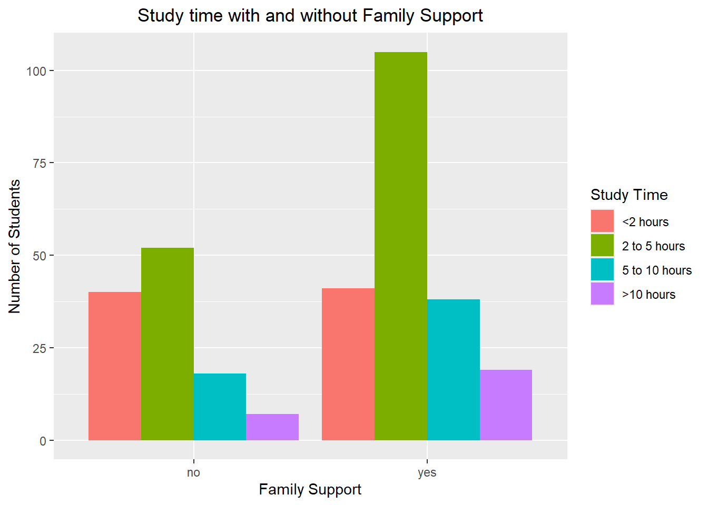
The side-by-side bars make it easier to see that almost the same number of students in both groups are in the <2 hours category. With or without family support, not many students are putting in more than 10 hours, but a significantly higher proportion of kids with family support allocate 5 to 10 hours to studying compared to the non-supported kids.
Numeric Variables
Measures of center and spread (no grouping)
Measures of center and spread, 3 numeric variables, full data
It’s interesting that the rural kids with family support have fewer absences than the rural kids without family support, but in the urban group, that relationship is reversed.
Rural student absences without family support have a much higher standard deviation than the other categories, so there is a lot more variation in the number of absences compared to the other groups.
It’s interesting that G1, G2, and G3 scores within the same subject are highly correlated with each other, while the scores between subjects still correlate, just not as strongly. Students may apply the same set of study skills across subjects, so that their scores would be related. It makes intuitive sense that the correlation of scores in different subjects would be less strong, since math and portuguese require differing sets of skills to perform well. There seems to be no discernible linear relationship among the other numeric variables.
Histogram, kernel density plot, and boxplot
2 numeric variables and 1 categorical variable (3 graphs each)
Final (G3) Portuguese Scores (numeric) vs. Study Time (categorical)
Histogram
g <-ggplot(data = student_combined, aes(x = G3_por))g +geom_histogram(aes(fill = studytimeF), bins =20) +ggtitle("Final (G3) Portuguese Scores by Study Time") +theme(plot.title =element_text(hjust =0.5)) +labs(x ="Final Score (Portuguese)", y ="Number of Students") +scale_fill_discrete("Study Time")
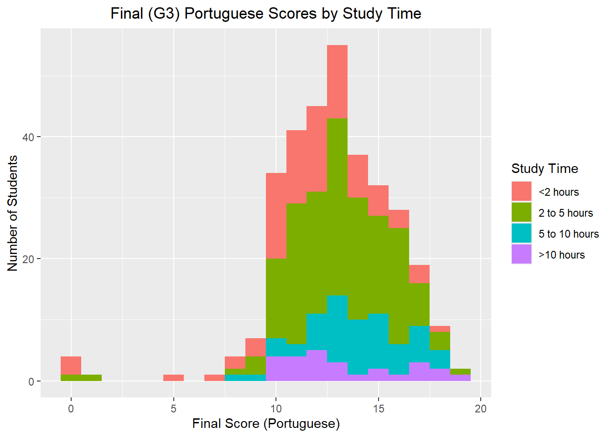
I can kind of see that the centers of distributions of final scores for most of the study groups is around 12-13, and the group that studied >10 hours has a lower median.
Kernel density plot
g +geom_density(aes(fill = studytimeF), kernel ="gaussian", alpha =0.4) +ggtitle("Final (G3) Portuguese Scores by Study Time") +theme(plot.title =element_text(hjust =0.5)) +labs(x ="Final Score (Portuguese)", y ="Proportion of Students") +scale_fill_discrete("Study Time")
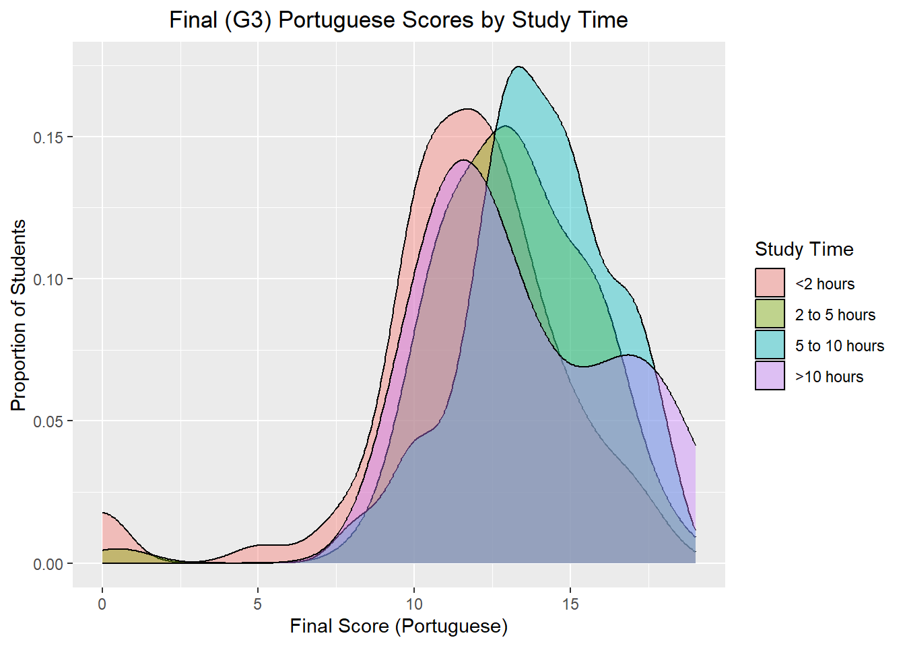
Viewing this data as a density plot makes it clearer that longer study times didn’t appear to benefit those students in terms of their final scores in Portuguese.
Boxplot
g <-ggplot(data = student_combined)g +geom_boxplot(aes(x = studytimeF, y = G3_por, fill = studytimeF)) +ggtitle("Final (G3) Portuguese Scores by Study Time") +theme(plot.title =element_text(hjust =0.5)) +labs(x ="Study Time", y ="Final Score (Portuguese)") +scale_fill_discrete("Study Time")
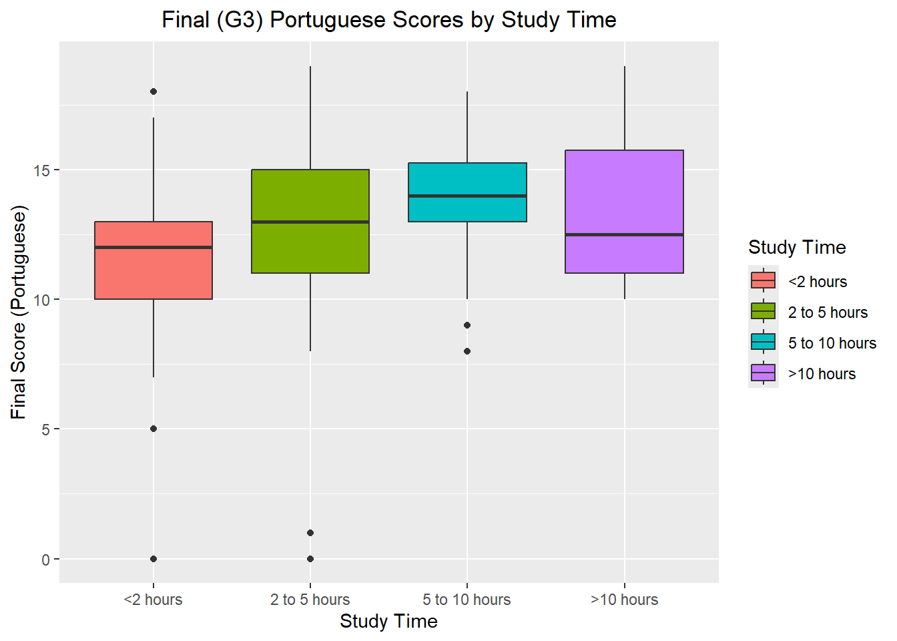
Here it is even more evident that median scores improved with longer study time, until the students exceeded 10 hours. After that, the median score dropped, and the relative height of the box indicated more variation in scores. This suggests students who studied longer than 10 hours may have comprehension deficits that are not being adequately resolved by their chosen method of studying.
Final (G3) Math Scores (numeric) vs. Home Address (categorical)
Histogram
g <-ggplot(data = student_combined)g +geom_histogram(aes(x = G3_mat, fill = addressF), binwidth =2) +ggtitle("Final (G3) Math Scores vs Home Address") +theme(plot.title =element_text(hjust =0.5)) +labs(x ="Final Score (Math)", y ="Number of Students") +scale_fill_discrete("Home Address")
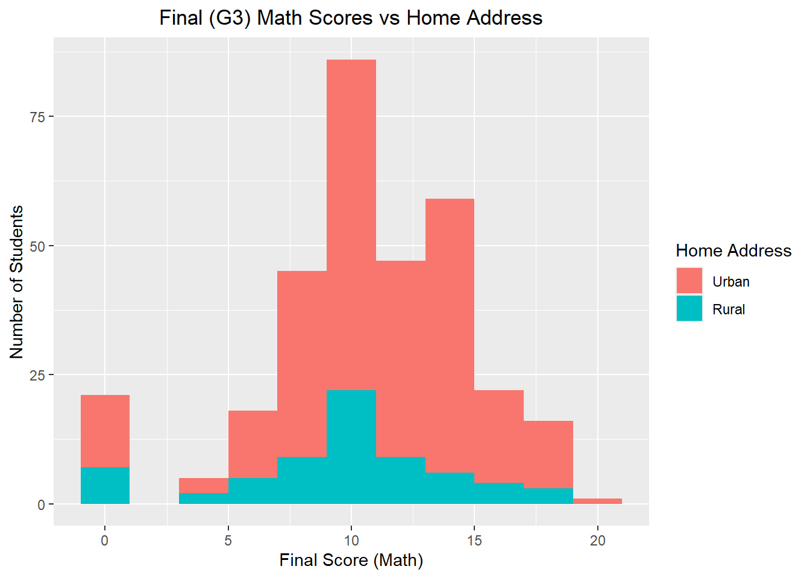
Both urban and rural student groups show around 10 as the score with the highest relative frequency.
Kernel density plot
g +geom_density(aes(x = G3_mat, fill = addressF), kernel ="gaussian", alpha =0.4) +ggtitle("Final (G3) Math Scores vs Home Address") +theme(plot.title =element_text(hjust =0.5)) +labs(x ="Final Score (Math)", y ="Proportion of Students") +scale_fill_discrete("Home Address")
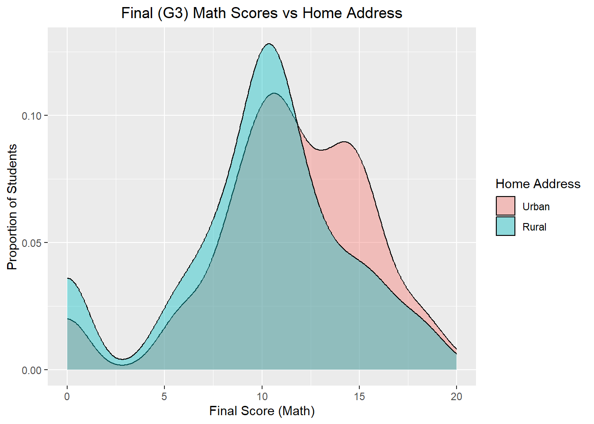
The density plot shows that the left side of the distributions are similar in shape, but that the urban students had potentially a bimodal distribution.
Boxplot
g +geom_boxplot(aes(x = addressF, y = G3_mat, fill = addressF)) +ggtitle("Final (G3) Math Scores vs Home Address") +theme(plot.title =element_text(hjust =0.5)) +labs(x ="Home Address", y ="Final Score (Math)") +scale_fill_discrete("Home Address")
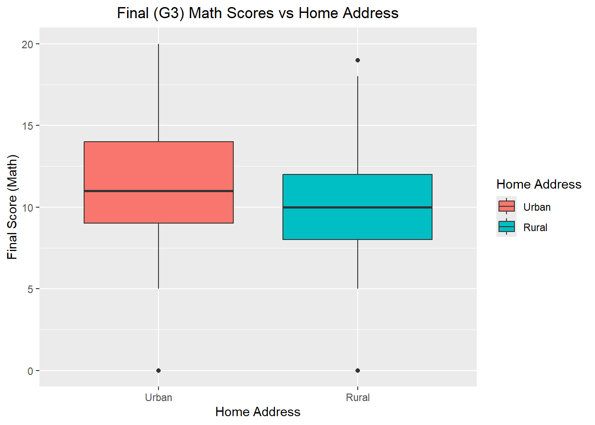
Even though the median scores between the two groups is similar, the urban group had a larger interquartile range.
Scatterplots
Final vs First Period Portuguese Scores, by study time
g <-ggplot(data = student_combined,mapping =aes(x = G1_por, y = G3_por, color = studytimeF))g +geom_point() +theme(plot.title =element_text(hjust =0.5)) +labs(title ="Final (G3) Portuguese Scores vs First Period Grade \n by Study Time",x ="First Period Score (Portuguese)", y ="Final Score (Portuguese)",color ="Study Time")
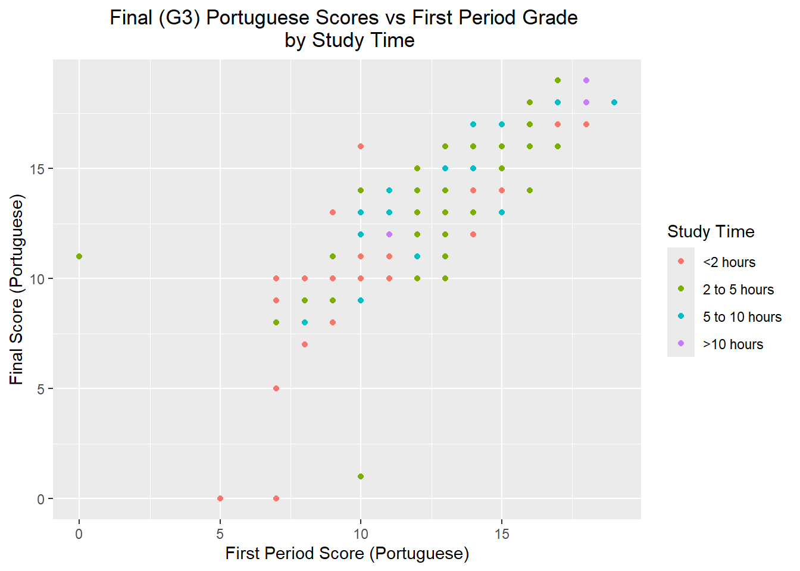
The correlation between first period and final Portuguese scores can be seen, but no discernible pattern in the study time jumps out.
Final Math Scores vs Final Portuguese Scores, by study time
g <-ggplot(data = student_combined,mapping =aes(x = G3_mat, y = G3_por, color = studytimeF))g +geom_point() +theme(plot.title =element_text(hjust =0.5)) +labs(title ="Final (G3) Portuguese Scores vs Final (G3) Math Scores \n by Study Time",x ="Final Score (Math)", y ="Final Score (Portuguese)",color ="Study Time")
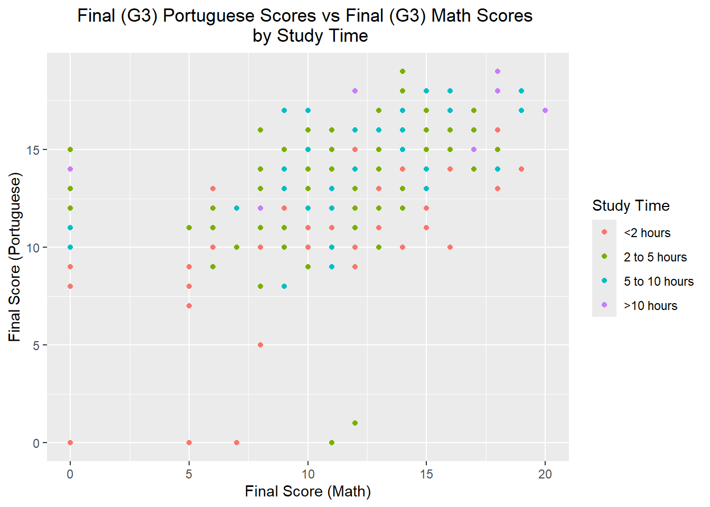
Again, there is correlation between final Math scores and final Portuguese scores, but I can’t really draw any meaningful relationship between these scores and study time.
Final vs First Period Portuguese Scores, by study time, facet by Home Address
g <-ggplot(data = student_combined,mapping =aes(x = G1_por, y = G3_por, color = studytimeF))g +geom_point() +theme(plot.title =element_text(hjust =0.5)) +labs(title ="Final (G3) Portuguese Scores vs First Period Grade \n by Study Time",x ="First Period Score (Portuguese)", y ="Final Score (Portuguese)",color ="Study Time") +facet_wrap(~ addressF)
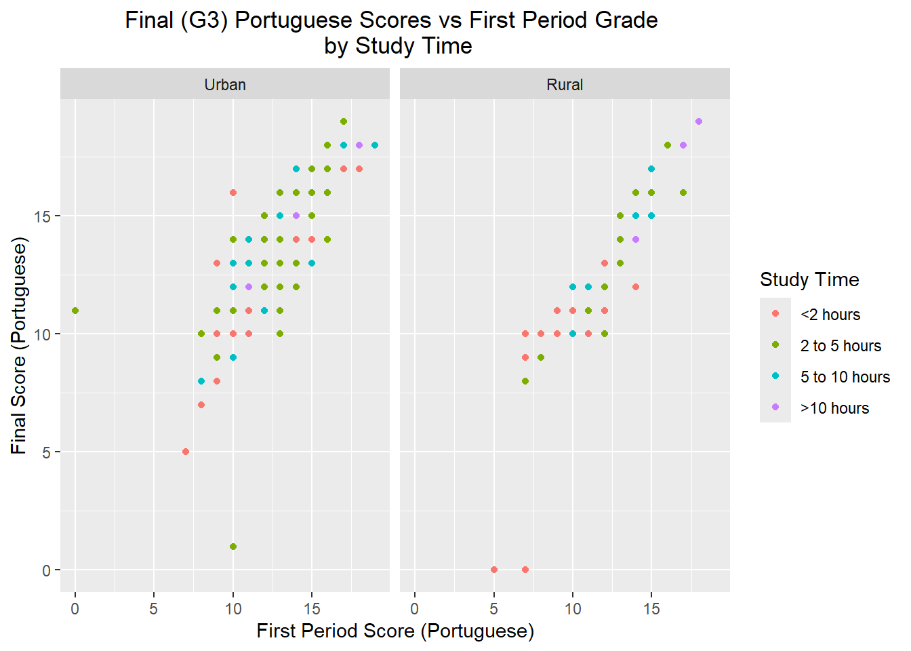
Can see more variation among final and first period scores or urban students compared to rural ones.
Final Math Scores vs Final Portuguese Scores, by study time, facet by home address
g <-ggplot(data = student_combined,mapping =aes(x = G3_mat, y = G3_por, color = studytimeF))g +geom_point() +theme(plot.title =element_text(hjust =0.5)) +labs(title ="Final (G3) Portuguese Scores vs Final (G3) Math Scores \n by Study Time",x ="Final Score (Math)", y ="Final Score (Portuguese)",color ="Study Time") +facet_wrap(~ addressF)
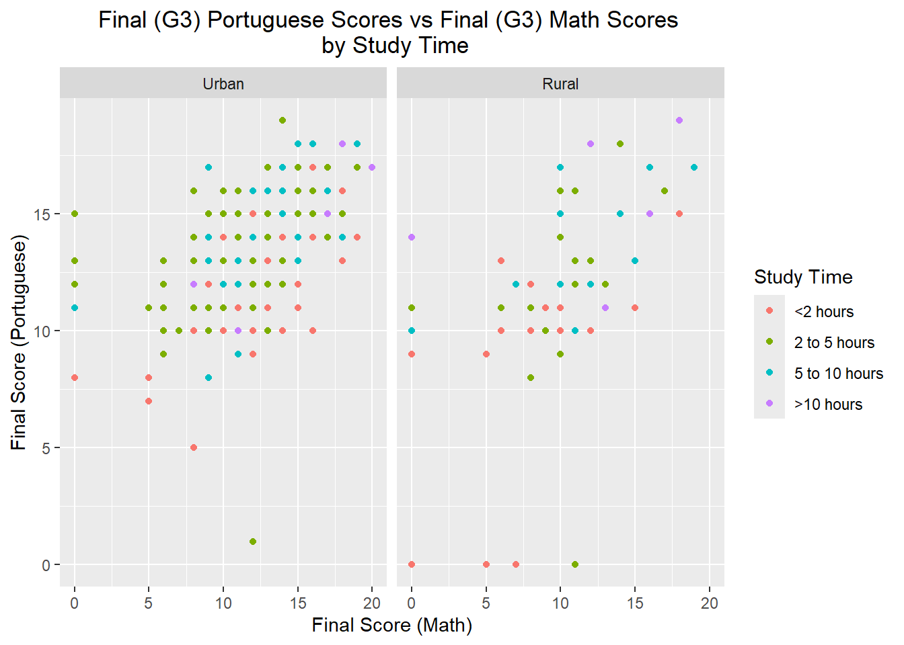
Final scores in Math vs. Portuguese for the rural group looks less correlated than the other combinations shown in scatterplots so far.
Final vs First Period Portuguese Scores, by study time, facet by Home Address and family support
g <-ggplot(data = student_combined,mapping =aes(x = G1_por, y = G3_por, color = studytimeF))g +geom_point() +theme(plot.title =element_text(hjust =0.5)) +labs(title ="Final (G3) Portuguese Scores vs First Period Grade \n by Study Time",x ="First Period Score (Portuguese)", y ="Final Score (Portuguese)",color ="Study Time") +facet_grid(famsupF ~ addressF, labeller = label_both)
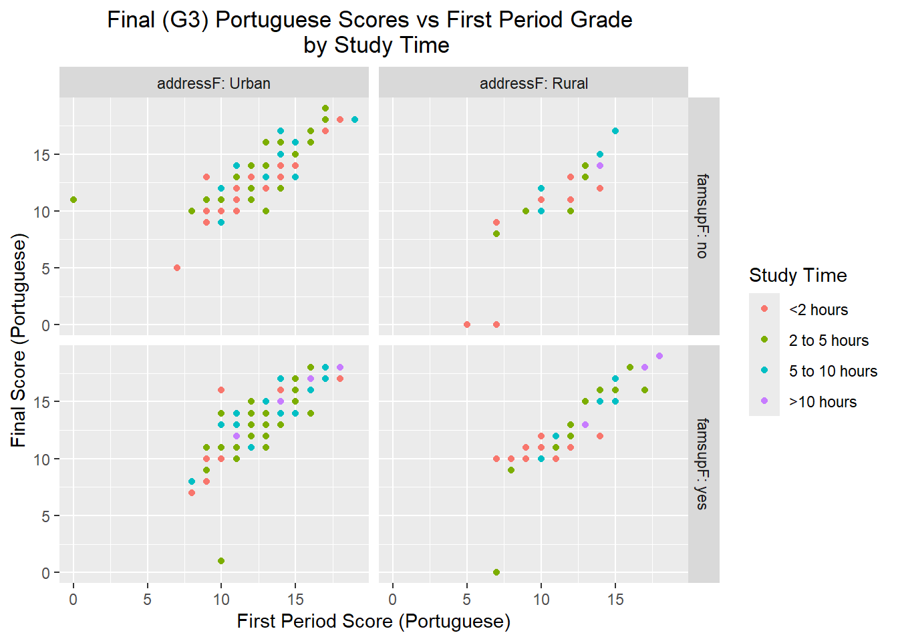
I think in this facet grid, we’re starting to see some correlation to first period and final Portuguese scores relative to family support and home address. In the bottom-right facet, it looks like there may be greater gain on final scores vs first period for rural students with family support who spent 2-5 hours studying compared to the same group who only spent <2 hours studying.
Final Math Scores vs Final Portuguese Scores, by study time, facet by home address and family support
g <-ggplot(data = student_combined,mapping =aes(x = G3_mat, y = G3_por, color = studytimeF))g +geom_point() +theme(plot.title =element_text(hjust =0.5)) +labs(title ="Final (G3) Portuguese Scores vs Final (G3) Math Scores \n by Study Time",x ="Final Score (Math)", y ="Final Score (Portuguese)",color ="Study Time") +facet_grid(famsupF ~ addressF, labeller = label_both)
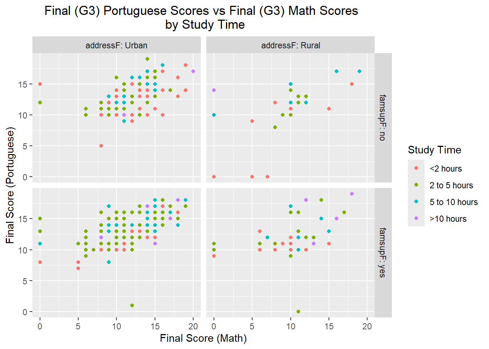
Now doing a similar plot, but instead comparing final math scores to final Portugues scores, there seems to be less correlation for the most part. Still see some increased benefit to studying 2-5 hours compared to <2 hours for the urban group, no matter the family support status.